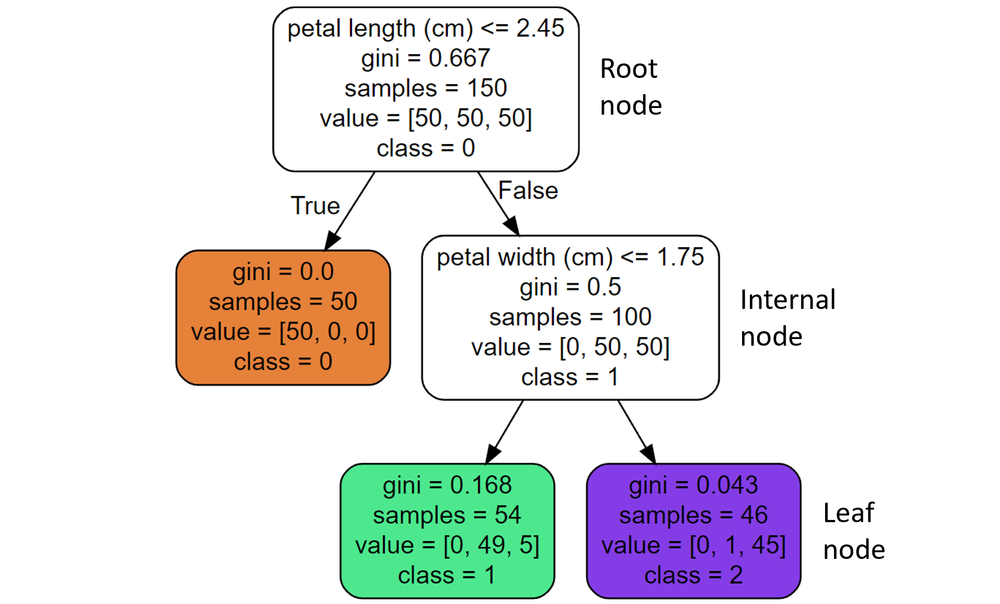
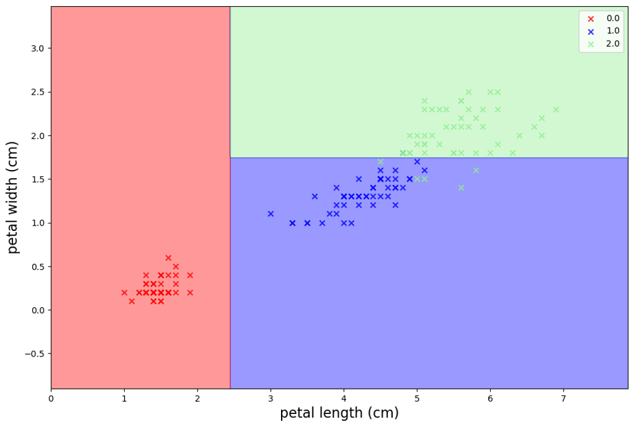
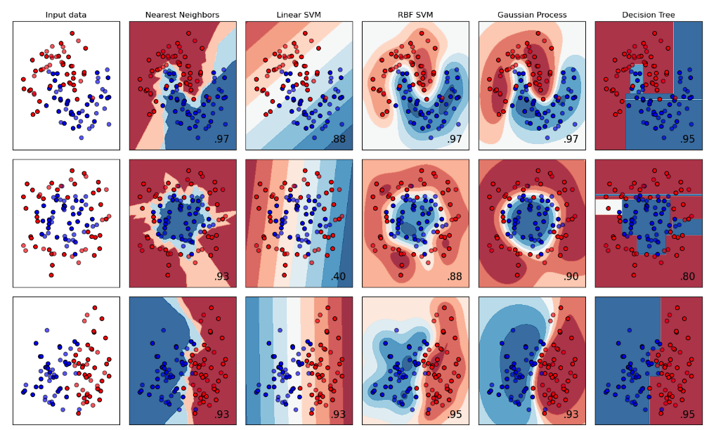
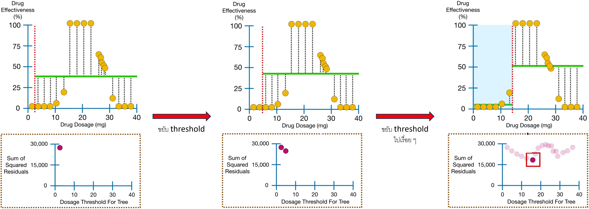
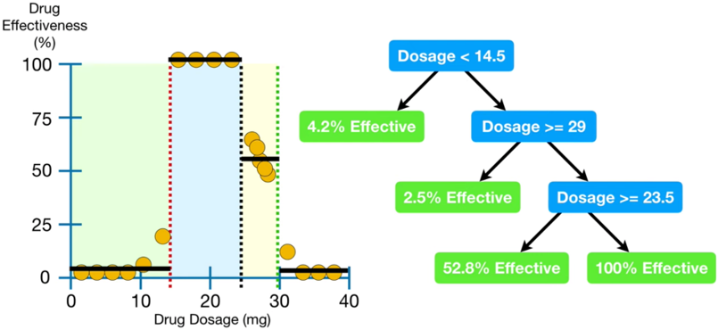
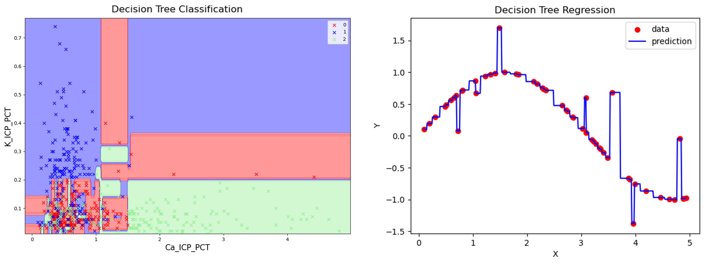

Decision Trees#
import numpy as np
import pandas as pd
import matplotlib.pyplot as plt
from sklearn.datasets import load_iris
from sklearn.tree import DecisionTreeClassifier
import graphviz
from sklearn.tree import export_graphviz
from mlxtend.plotting import plot_decision_regions
Decision trees#
แยกข้อมูลออกจากกันไปเรื่อย ๆ
Decision tree classifiers#
เริ่มจาก root node ที่เก็บทั้ง dataset เอาไว้ กำหนด threshold ต่าง ๆ ของแต่ละ feature มาแบ่ง dataset ออกเป็น 2 child node นำผลที่ได้จากการแบ่งแต่ละแบบมาคำนวณ gini index เฉลี่ยของทั้ง 2 child node ถ่วงน้ำหนักโดยจำนวนข้อมูลในแต่ละ node เลือกการแบ่งข้อมูลที่ทำให้ gini index เฉลี่ยต่ำสุด (child node บริสุทธิ์ที่สุด นั่นคือ มีปริมาณข้อมูลที่ถูก classified ผิดน้อยที่สุด) จากนั้นแบ่งข้อมูลใน child node ออกไปอีก ทำไปเรื่อย ๆ จนไม่เหลือ feature ใดที่แยกข้อมูลต่อได้อีก
Gini index เป็นค่าที่วัดความสามารถของ feature ในการแยกข้อมูลเป็น 2 ชุด
\(p_i\) = สัดส่วนของข้อมูลใน class \(i\) ที่ถูกแยกไว้ใน node นั้น
Gini index มีค่าระหว่าง 0 กับ 1
Node ที่มี gini index น้อยกว่าจะบริสุทธิ์กว่า
พิจารณาตัวอย่าง tree classifier ในภาพด้านล่าง ซึ่งแบ่งดอกไม้ออกเป็น 3 กลุ่ม (Class 0, 1, 2) โดยใช้ “petal length” และ “petal width” feature และกำหนด threshold ไว้ที่ 2.45 และ 1.75 ตามลำดับ

เราสามารถคำนวณ Gini index ของ root node กับ leaf node สีเขียวได้ดังนี้
ดังนั้น leaf node สีเขียว บริสุทธิ์กว่า root node (leaf node สีเขียว มีปริมาณข้อมูลที่ถูก classified ผิด น้อยกว่าใน root node)
เมื่อได้ tree ที่ดีที่สุดแล้ว เราจะเอา test data มาทำนายโดยผ่านเข้าไปใน root node ลงไปหา internal node ที่เข้าเงื่อนไขเรื่อย ๆ จนถึง leaf node ตัวอย่างเช่น ถ้าข้อมูลของดอกไม้ดอกหนึ่งมี petal length = 4 และ petal width = 1 ใช้ tree ด้านบนทำนายจะได้ว่าดอกไม้นี้อยู่ใน Class 1
เมื่อ plot decision region จะเห็นได้ว่า decision boundary ตั้งฉากกัน

การเพิ่ม tree depth จะสามารถทำให้ boundary ซับซ้อนขึ้น

เราสามารถสร้าง decision tree classifier ได้โดยใช้ sklearn.tree.DecisionTreeClassifier
# Load iris dataset and drop duplicates
iris = load_iris()
data = pd.DataFrame(
data=np.c_[iris['data'], iris['target']],
columns=(iris['feature_names'] + ['target'])
).drop_duplicates()
data
| sepal length (cm) | sepal width (cm) | petal length (cm) | petal width (cm) | target | |
|---|---|---|---|---|---|
| 0 | 5.1 | 3.5 | 1.4 | 0.2 | 0.0 |
| 1 | 4.9 | 3.0 | 1.4 | 0.2 | 0.0 |
| 2 | 4.7 | 3.2 | 1.3 | 0.2 | 0.0 |
| 3 | 4.6 | 3.1 | 1.5 | 0.2 | 0.0 |
| 4 | 5.0 | 3.6 | 1.4 | 0.2 | 0.0 |
| ... | ... | ... | ... | ... | ... |
| 145 | 6.7 | 3.0 | 5.2 | 2.3 | 2.0 |
| 146 | 6.3 | 2.5 | 5.0 | 1.9 | 2.0 |
| 147 | 6.5 | 3.0 | 5.2 | 2.0 | 2.0 |
| 148 | 6.2 | 3.4 | 5.4 | 2.3 | 2.0 |
| 149 | 5.9 | 3.0 | 5.1 | 1.8 | 2.0 |
149 rows × 5 columns
# Features (X) and target (y)
# Convert them to numpy arrays as required when ploting decision regions
X = data[['petal length (cm)', 'petal width (cm)']].values
y = data['target'].values.astype(int)
# Tree classifier
tree_clf = DecisionTreeClassifier(max_depth=2, random_state=2).fit(X, y)
# Export tree
export_graphviz(tree_clf,
out_file="../data/iris_tree.dot",
feature_names=['petal length (cm)', 'petal width (cm)'],
class_names=['0', '1', '2'],
rounded=True,
filled=True)
# Import tree
with open("../data/iris_tree.dot") as f:
dot_graph = f.read()
display(graphviz.Source(dot_graph))
---------------------------------------------------------------------------
FileNotFoundError Traceback (most recent call last)
File ~\AppData\Local\Programs\Python\Python311\Lib\site-packages\graphviz\backend\execute.py:79, in run_check(cmd, input_lines, encoding, quiet, **kwargs)
78 kwargs['stdout'] = kwargs['stderr'] = subprocess.PIPE
---> 79 proc = _run_input_lines(cmd, input_lines, kwargs=kwargs)
80 else:
File ~\AppData\Local\Programs\Python\Python311\Lib\site-packages\graphviz\backend\execute.py:99, in _run_input_lines(cmd, input_lines, kwargs)
98 def _run_input_lines(cmd, input_lines, *, kwargs):
---> 99 popen = subprocess.Popen(cmd, stdin=subprocess.PIPE, **kwargs)
101 stdin_write = popen.stdin.write
File ~\AppData\Local\Programs\Python\Python311\Lib\subprocess.py:1024, in Popen.__init__(self, args, bufsize, executable, stdin, stdout, stderr, preexec_fn, close_fds, shell, cwd, env, universal_newlines, startupinfo, creationflags, restore_signals, start_new_session, pass_fds, user, group, extra_groups, encoding, errors, text, umask, pipesize, process_group)
1021 self.stderr = io.TextIOWrapper(self.stderr,
1022 encoding=encoding, errors=errors)
-> 1024 self._execute_child(args, executable, preexec_fn, close_fds,
1025 pass_fds, cwd, env,
1026 startupinfo, creationflags, shell,
1027 p2cread, p2cwrite,
1028 c2pread, c2pwrite,
1029 errread, errwrite,
1030 restore_signals,
1031 gid, gids, uid, umask,
1032 start_new_session, process_group)
1033 except:
1034 # Cleanup if the child failed starting.
File ~\AppData\Local\Programs\Python\Python311\Lib\subprocess.py:1509, in Popen._execute_child(self, args, executable, preexec_fn, close_fds, pass_fds, cwd, env, startupinfo, creationflags, shell, p2cread, p2cwrite, c2pread, c2pwrite, errread, errwrite, unused_restore_signals, unused_gid, unused_gids, unused_uid, unused_umask, unused_start_new_session, unused_process_group)
1508 try:
-> 1509 hp, ht, pid, tid = _winapi.CreateProcess(executable, args,
1510 # no special security
1511 None, None,
1512 int(not close_fds),
1513 creationflags,
1514 env,
1515 cwd,
1516 startupinfo)
1517 finally:
1518 # Child is launched. Close the parent's copy of those pipe
1519 # handles that only the child should have open. You need
(...)
1522 # pipe will not close when the child process exits and the
1523 # ReadFile will hang.
FileNotFoundError: [WinError 2] The system cannot find the file specified
The above exception was the direct cause of the following exception:
ExecutableNotFound Traceback (most recent call last)
File ~\AppData\Local\Programs\Python\Python311\Lib\site-packages\IPython\core\formatters.py:974, in MimeBundleFormatter.__call__(self, obj, include, exclude)
971 method = get_real_method(obj, self.print_method)
973 if method is not None:
--> 974 return method(include=include, exclude=exclude)
975 return None
976 else:
File ~\AppData\Local\Programs\Python\Python311\Lib\site-packages\graphviz\jupyter_integration.py:98, in JupyterIntegration._repr_mimebundle_(self, include, exclude, **_)
96 include = set(include) if include is not None else {self._jupyter_mimetype}
97 include -= set(exclude or [])
---> 98 return {mimetype: getattr(self, method_name)()
99 for mimetype, method_name in MIME_TYPES.items()
100 if mimetype in include}
File ~\AppData\Local\Programs\Python\Python311\Lib\site-packages\graphviz\jupyter_integration.py:98, in <dictcomp>(.0)
96 include = set(include) if include is not None else {self._jupyter_mimetype}
97 include -= set(exclude or [])
---> 98 return {mimetype: getattr(self, method_name)()
99 for mimetype, method_name in MIME_TYPES.items()
100 if mimetype in include}
File ~\AppData\Local\Programs\Python\Python311\Lib\site-packages\graphviz\jupyter_integration.py:112, in JupyterIntegration._repr_image_svg_xml(self)
110 def _repr_image_svg_xml(self) -> str:
111 """Return the rendered graph as SVG string."""
--> 112 return self.pipe(format='svg', encoding=SVG_ENCODING)
File ~\AppData\Local\Programs\Python\Python311\Lib\site-packages\graphviz\piping.py:104, in Pipe.pipe(self, format, renderer, formatter, neato_no_op, quiet, engine, encoding)
55 def pipe(self,
56 format: typing.Optional[str] = None,
57 renderer: typing.Optional[str] = None,
(...)
61 engine: typing.Optional[str] = None,
62 encoding: typing.Optional[str] = None) -> typing.Union[bytes, str]:
63 """Return the source piped through the Graphviz layout command.
64
65 Args:
(...)
102 '<?xml version='
103 """
--> 104 return self._pipe_legacy(format,
105 renderer=renderer,
106 formatter=formatter,
107 neato_no_op=neato_no_op,
108 quiet=quiet,
109 engine=engine,
110 encoding=encoding)
File ~\AppData\Local\Programs\Python\Python311\Lib\site-packages\graphviz\_tools.py:171, in deprecate_positional_args.<locals>.decorator.<locals>.wrapper(*args, **kwargs)
162 wanted = ', '.join(f'{name}={value!r}'
163 for name, value in deprecated.items())
164 warnings.warn(f'The signature of {func.__name__} will be reduced'
165 f' to {supported_number} positional args'
166 f' {list(supported)}: pass {wanted}'
167 ' as keyword arg(s)',
168 stacklevel=stacklevel,
169 category=category)
--> 171 return func(*args, **kwargs)
File ~\AppData\Local\Programs\Python\Python311\Lib\site-packages\graphviz\piping.py:121, in Pipe._pipe_legacy(self, format, renderer, formatter, neato_no_op, quiet, engine, encoding)
112 @_tools.deprecate_positional_args(supported_number=2)
113 def _pipe_legacy(self,
114 format: typing.Optional[str] = None,
(...)
119 engine: typing.Optional[str] = None,
120 encoding: typing.Optional[str] = None) -> typing.Union[bytes, str]:
--> 121 return self._pipe_future(format,
122 renderer=renderer,
123 formatter=formatter,
124 neato_no_op=neato_no_op,
125 quiet=quiet,
126 engine=engine,
127 encoding=encoding)
File ~\AppData\Local\Programs\Python\Python311\Lib\site-packages\graphviz\piping.py:149, in Pipe._pipe_future(self, format, renderer, formatter, neato_no_op, quiet, engine, encoding)
146 if encoding is not None:
147 if codecs.lookup(encoding) is codecs.lookup(self.encoding):
148 # common case: both stdin and stdout need the same encoding
--> 149 return self._pipe_lines_string(*args, encoding=encoding, **kwargs)
150 try:
151 raw = self._pipe_lines(*args, input_encoding=self.encoding, **kwargs)
File ~\AppData\Local\Programs\Python\Python311\Lib\site-packages\graphviz\backend\piping.py:212, in pipe_lines_string(engine, format, input_lines, encoding, renderer, formatter, neato_no_op, quiet)
206 cmd = dot_command.command(engine, format,
207 renderer=renderer,
208 formatter=formatter,
209 neato_no_op=neato_no_op)
210 kwargs = {'input_lines': input_lines, 'encoding': encoding}
--> 212 proc = execute.run_check(cmd, capture_output=True, quiet=quiet, **kwargs)
213 return proc.stdout
File ~\AppData\Local\Programs\Python\Python311\Lib\site-packages\graphviz\backend\execute.py:84, in run_check(cmd, input_lines, encoding, quiet, **kwargs)
82 except OSError as e:
83 if e.errno == errno.ENOENT:
---> 84 raise ExecutableNotFound(cmd) from e
85 raise
87 if not quiet and proc.stderr:
ExecutableNotFound: failed to execute WindowsPath('dot'), make sure the Graphviz executables are on your systems' PATH
<graphviz.sources.Source at 0x28f730ed750>
# Make a prediction (petal length = 4, petal width = 1)
petal_length = 4
petal_width = 1
print("Class", tree_clf.predict([[petal_length, petal_width]]))
Class [1]
# predict_proba of a tree classifier doesn't return the probability of the outcome to be classified in each class
# but returns the proportion of flowers in each class are classified in the same class as the prediction
proportions_classified_in_class_1 = tree_clf.predict_proba([[petal_length, petal_width]])
print(proportions_classified_in_class_1)
print(np.allclose(proportions_classified_in_class_1, [[0/54, 49/54, 5/54]]))
[[0. 0.90740741 0.09259259]]
True
# Plot decision regions
fig, ax = plt.subplots(figsize=(6, 4))
fig = plot_decision_regions(X, y, clf=tree_clf)
ax.set(
xlabel='petal length (cm)',
ylabel='petal width (cm)',
title='Decision regions of the tree classifier'
);
Decision tree regressors#
แบ่งข้อมูลออกเป็นสองฝั่งโดยใช้ threshold ค่าต่าง ๆ จากนั้นคำนวณ SSR (sum of square residuals = ผลรวมของกำลังสองของผลต่างระหว่างค่าจริงกับค่าเฉลี่ย) ของข้อมูลแต่ละฝั่ง แล้วเอามาเฉลี่ยกันถ่วงน้ำหนักด้วยจำนวนข้อมูลในแต่ละฝั่ง เลือก threshold ที่ทำให้ SSR เฉลี่ยต่ำสุด

เมื่อได้ tree ที่ดีที่สุดแล้ว ค่าเฉลี่ยของ training data ในแต่ละ region จะถูกใช้เป็นค่าทำนาย

เราสามารถสร้าง decision tree regressor ได้โดยใช้ sklearn.tree.DecisionTreeRegressor
Dealing with overfitting#
ถ้าสร้าง decision boundary มากเกินไปจะทำให้เกิด overfitting

วิธีแก้ คือต้องทำ hyperparameter tuning เพราะ default parameter มักจะทำให้ tree overfit
Parameter ที่สำคัญที่เราต้อง tune ให้ดี เช่น
min_samples_split= จำนวนข้อมูลอย่างน้อยที่ต้องมีใน internal node หนึ่งmax_depth= ความลึกที่มากที่สุดของ tree มักไม่ควรเกิน 5min_samples_leaf= จำนวนข้อมูลอย่างน้อยที่ต้องมีใน leaf node หนึ่ง
Pros and cons of decision trees#
ข้อดีของ decision tree เช่น
ไม่ต้องทำ scaling
ไม่อ่อนไหวต่อ outlier
ใช้งานง่าย และสามารถตีความผลลัพธ์ได้ง่าย
ทำ feature selection ได้ (ใช้ gini-based
feature_importance_)ใช้ทำ non-linear model
ข้อเสียของ decision tree เช่น
high variance (ข้อมูลเปลี่ยนเพียงเล็กน้อยก็ทำให้ tree structure เปลี่ยน)
training time เพิ่มขึ้นอย่างรวดเร็วเมื่อ
max_depthเพิ่มขึ้นแบ่งข้อมูลได้แค่ในแนวตั้งฉากกับแกนของ feature
%%html
<iframe src="https://scikit-learn.org/stable/auto_examples/tree/plot_tree_regression.html#sphx-glr-auto-examples-tree-plot-tree-regression-py" width="1200" height="1000" />